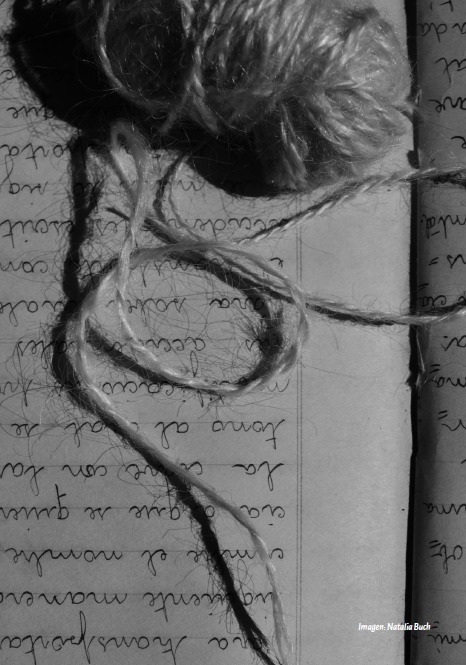

-

-

- 
-

-

Nosotras Somos Ellas
Cien años de historias de mujeres en la Patagonia
¿Tenés alguna consulta? Escribinos a nosotras.somos.ellas.libro@gmail.com
Sobre las autoras
Laura Méndez es Doctora en Historia y Especialista en Estudios de la Mujer y de Género. Docente de grado y posgrado de la Universidad Nacional del Comahue en Bariloche. Se especializa en los estudios histórico-culturales y educativos de la Patagonia Norte.
Mónica de Torres Curth es Doctora en Biología, Magíster en Enseñanza de las Ciencias Exactas y Naturales y su formación de grado es en Matemática. Es escritora, y se dedica en particular al género cuento.
Julieta Santos es Magíster en Derechos Humanos y Políticas Sociales, y Licenciada en Ciencias de la Educación. Actualmente es becaria doctoral CONICET. Su área de investigación son los Derechos Humanos y la formación docente. Es escritora y poeta.
*****
Natalia Buch es Licenciada en Psicología y fotógrafa. Reside en Bariloche. Su obra se puede ver en https://www.instagram.com/natbuch_fotos/
Fernanda Rivera Luque es fotógrafa profesional, residente en Ushuaia. Su obra se puede ver en https://www.instagram.com/fernandariveraluque/